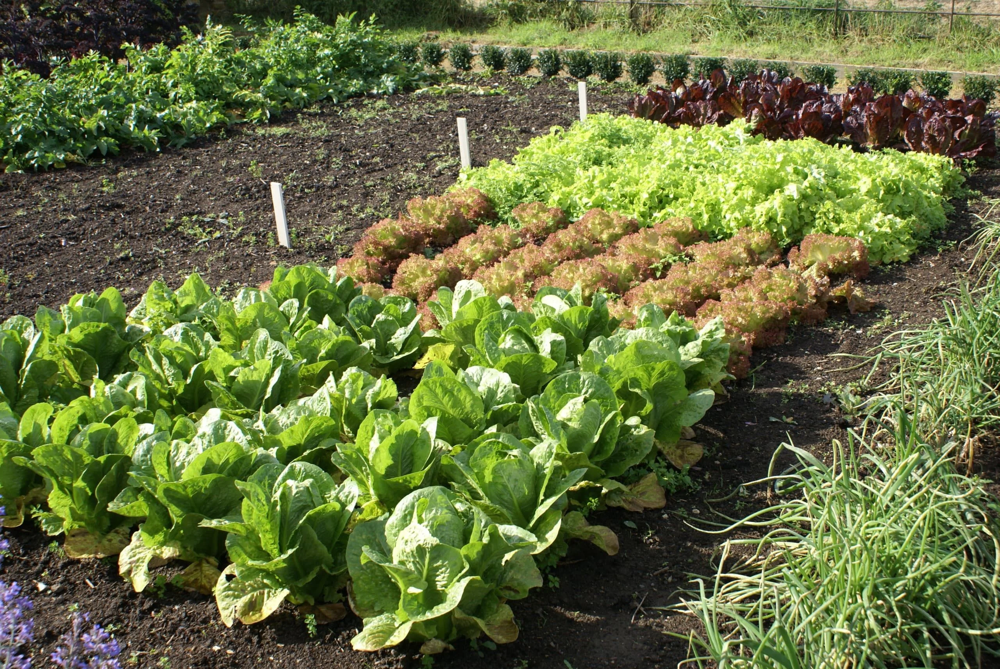

Sustentabilidad
Jornada de huerto comunitario
Publicado el

El huerto comunitario se ha convertido en un punto de encuentro donde vecinas y vecinos comparten conocimientos de cultivo mientras fortalecen los lazos del barrio. Cada jornada combina trabajo práctico en la tierra con conversaciones sobre alimentación sustentable y cuidado del entorno.
Información de la actividad
- Fecha: sábado 29 de agosto.
- Duración: 2 horas y media.
- Requisito: ropa cómoda y guantes de jardinería (si tienes).